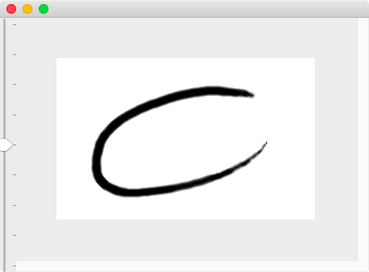
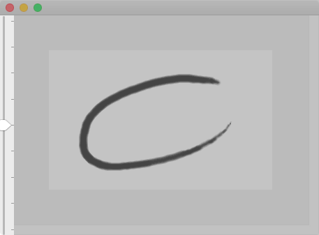
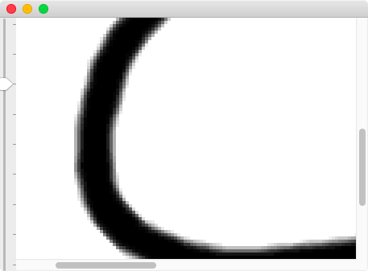

主ウィンドウ（ドキュメントウィンドウ）
このウィンドウが本ツールで編集するドキュメントに対応したウィンドウになります。
このウィンドウに限り、開いているドキュメントごとに開く事ができ、複数のドキュメント（画像）を同時に開いている場合、複数の主ウィンドウが開きます（逆に、主ウィンドウ以外の各種補助ウィンドウはアプリケーションで共通で、前面に来る主ウィンドウを切り替えると補助ウィンドウの内容が切り替わります）。
画像の加工・編集などの操作は、すべてこのウィンドウで行います。

表示倍率
本ツールには、いわゆる「ルーペ」という機能はありません。
その代わりに、主ウィンドウ（および表示ウィンドウ）の左側にスライダーを設けています。

このスライダーを上にずらすと拡大、下にずらすと縮小となります。


なお、主ウィンドウで縮小表示している場合は、編集時の応答性能への影響を考慮して補間縮小をかけません。
主ウィンドウと表示ウィンドウの使い分け
一見すると、主ウィンドウと表示ウィンドウは同じ表示を行うだけに見えます。
これは前述のとおりに「ルーペがない」ことに起因しています。
たとえば、
- 主ウィンドウでは拡大表示として画像を編集している
- それと同時に仕上がり実寸も確認したい
という場合にこそ、表示ウィンドウが役立ちます。
すなわち、
- 主ウィンドウでは拡大表示として画像を編集している
- それと同時に仕上がり実寸を表示ウィンドウで表示する
という用い方をします。
また、（これも前述のとおりですが）主ウィンドウでは縮小時に補間をかけないため、（補間をかけた）仕上がり全景を確認する際にも、表示ウィンドウを用いることを想定しています。
このように、一見すると全く同じ表示を行うような２つのウィンドウですが、
- 主ウィンドウは画像を編集するためのもの
- 表示ウィンドウは画像を確認するためのもの
と言った棲み分け（用途別の使い分け）をしています。